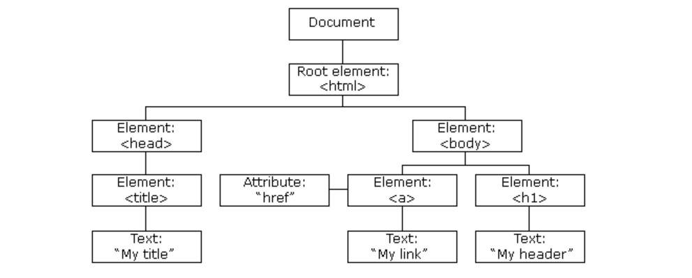
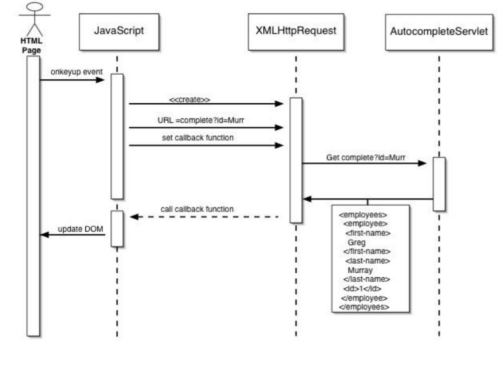

Introduction
 JavaScript , often abbreviated as JS, is a programming language that conforms to the ECMAScript
specification. JavaScript is high-level, often just-in-time compiled, and multi-paradigm. It has curly-bracket
syntax, dynamic typing, prototype-based object-orientation, and first-class functions.
JavaScript , often abbreviated as JS, is a programming language that conforms to the ECMAScript
specification. JavaScript is high-level, often just-in-time compiled, and multi-paradigm. It has curly-bracket
syntax, dynamic typing, prototype-based object-orientation, and first-class functions.
Alongside HTML and CSS, JavaScript is one of the core technologies of the World Wide Web. JavaScript enables
interactive web pages and is an essential part of web applications. The vast majority of websites use it for
client-side page behavior, and all major web browsers have a dedicated JavaScript engine to execute it.
As a multi-paradigm language, JavaScript supports event-driven, functional, and imperative programming styles. It
has application programming interfaces (APIs) for working with text, dates, regular expressions, standard data
structures, and the Document Object Model (DOM). However, the language itself does not include any input/output
(I/O), such as networking, storage, or graphics facilities, as the host environment (usually a web browser) provides
those APIs.
Originally used only in web browsers, JavaScript engines are now embedded in server-side website deployments, often
via Node.js. They are also embedded in a variety of applications created with frameworks such as Electron and
Cordova.
Although there are similarities between JavaScript and Java, including language name, syntax, and respective
standard libraries, the two languages are distinct and differ greatly in design.
Basic Syntax
Where to put
In HTML, JavaScript code is inserted between <script> and </script> tags.
<script>
document.getElementById("demo").innerHTML = "My First JavaScript";
</script>Scripts can also be placed in the <body>, or in the <head> section of an HTML page, or in both.
For example:
< body onload=" Syntax_highlight(); Js_Syntax_highlight(); " >
External scripts can be referenced with a full URL or with a path relative to the current web page, like follow:
< script src= " functions.js "> < /script >Set Variables
Variables in JavaScript can be defined using either the "var", "let" or "const" keywords.
var x;
const z = "this value cannot be reassigned!";
let y;
The keyword `const` means constant, hence the variable cannot be reassigned as the value is `constant`.
JavaScript is a dynamically-typed language, so this is legal.
z = "something" ;
JavaScript IO
There is no built-in Input/output functionality in JavaScript; However, most runtime environments have a console object that can be used to print output. Here is a minimalist Hello World program in JavaScript:
console.log("Hello World!") ;
In NodeJS you can access stdin, stdout, and stderr through the process object.
const readline = require('readline');
const rl = readline.createInterface({
input: process.stdin,
output: process.stdout});
rl.question('What do you think of Node.js? ', (answer) =>
{console.log('Thank you for your feedback:', answer);rl.close();});
DOM ( Document Object Model )
The Document Object Model is a platform- and language-neutral interface that will allow programs and scripts to dynamically access and update the content, structure and style of documents
The document can be further processed and the results of that processing can be incorporated back into the presented page.
The DOM standard is divided into three distinct parts:
- Core DOM - the standard model for any structured document
- XML DOM - the standard model for XML documents
- HTML DOM - the standard model for HTML documents
The HTML DOM model is constructed as a tree of Objects:
With the HTML DOM, all nodes in the tree are accessible through JavaScript. All HTML elements (nodes) can be modified, and nodes can be created or deleted.
For example, We can access a <form> element by using HTML DOM and JS to test the HTML form validation. Instances are followed.
DOM instance
Code
Result
Here is the tag P1
Here is the tag P2
Describe
AJAX ( Asynchronous JavaScript and XML )

Ajax is a set of web development techniques using many web technologies on the client side to create asynchronous web applications. With Ajax, web applications can send and retrieve data from a server asynchronously (in the background) without interfering with the display and behavior of the existing page.
By decoupling the data interchange layer from the presentation layer, Ajax allows web pages and, by extension, web applications, to change content dynamically without the need to reload the entire page.
In practice, modern implementations commonly utilize JSON instead of XML.
A AJAX instance is showed below, which is using Ajax to get Coronavirus Data
Coronavirus Data
JavaScript was created by Brendan Eich in 1995 during his time at Netscape Communications. It was inspired by Java, Scheme and Self.
JavaScript has a rich and fascinating history. It continues to be one of the most hated languages on the planet, often for reasons that have long since faded into irrelevance.
LiveWire and the powerful nature of the language betray the true ambitions of Andreessen and the Netscape team, foreshadowing a possible future beyond being just a Java companion.
The huge companies that dominate the technical landscape have repeatedly tried to supplant JavaScript. First Sun, then Microsoft (VBScript), then Adobe, then Microsoft again (Silverlight), then Google, and then, arguably with TypeScript, Microsoft yet again. And yet JavaScript continues to thrive.
JavaScript has become the de-facto standard programming language of the Web, not only because of its first-mover advantage, but because it is open, standardized, and, most importantly a very good language; well-suited to the Web with its dynamic nature and tight integration with the DOM.
Here is more detail of JavaScript's history